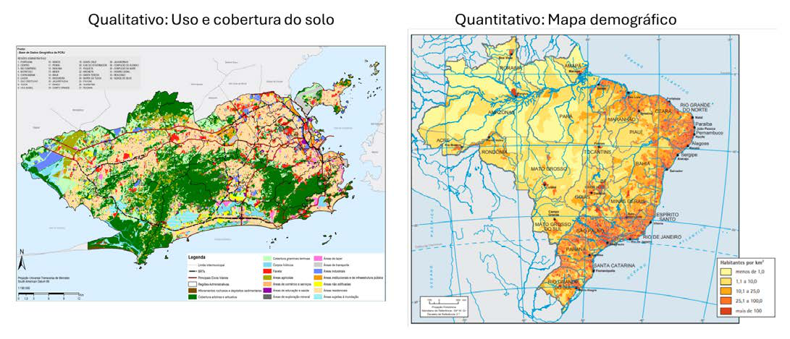
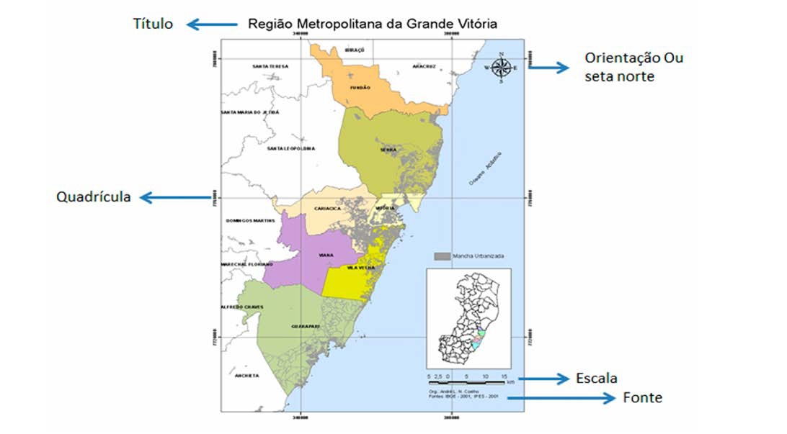
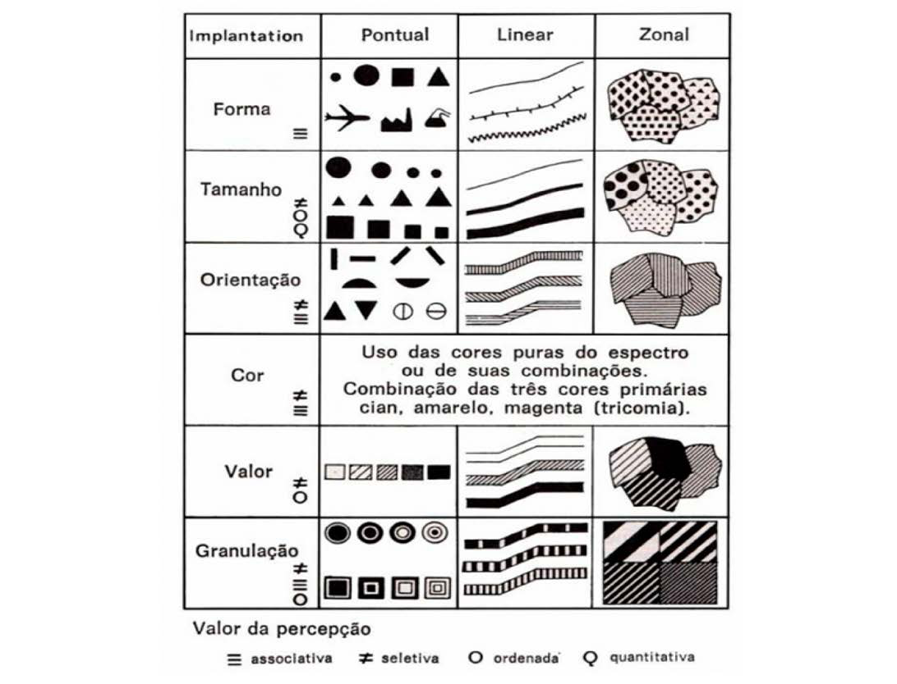
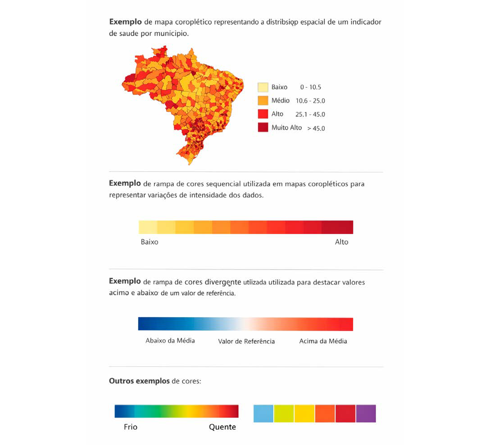

Módulo 3 | Aula 3
Fundamentos da Cartografia
Cartografia temática e simbologia
Cartografia temática
O objetivo da cartografia temática é representar, utilizando-se símbolos qualitativos e/ou quantitativos, fenômenos localizáveis de qualquer natureza sobre uma base de referência, geralmente um mapa topográfico, em quaisquer escalas, em que sobre um fundo geográfico básico.
Nesse tipo de mapa são representados os fenômenos geográficos, geológicos, demográficos, econômicos, agrícolas etc., visando ao estudo, à análise e à pesquisa dos temas, no seu aspecto espacial. É a combinação de uma base gráfica existente com o tema que se queira mapear, auxiliado por símbolos.
A cartografia temática é uma subdivisão da cartografia, que, por sua vez pode ser subdividida conforme a abordagem e a finalidade do mapeamento. Os Mapas qualitativos mostram categorias (qualidades), ou seja, mostram a distribuição espacial ou localização de determinadas características da região mapeada. Não se pode determinar quantidades, nem criar uma ordem hierárquica de classes. Os mapas quantitativos apresentam a distribuição de uma determinada variável, ou seja, mostram o quanto de uma determinada variável está presente em uma área (MENEZES; FERNANDES, 2013).
Figura 13: Mapas temáticos.

Fonte: Prefeitura do Município do Rio de Janeiro (2009) e IBGE (2010).
Simbologia cartográfica
Um mapa ou carta só está completo quando apresenta corretamente seus elementos cartográficos. Como a escala reduz os elementos do mundo real, muitas vezes é necessário utilizar simbologias para representar fenômenos geográficos que ficariam imperceptíveis (IBGE, 1999).
A cartografia utiliza um sistema de comunicação visual, que conecta o mundo real, o cartógrafo e o usuário, buscando facilitar a compreensão das informações representadas. Os elementos do espaço geográfico são representados por símbolos chamados convenções cartográficas, pois não é possível desenhar os objetos exatamente como são na realidade. Esses símbolos são explicados na legenda do mapa (IBGE, 1999).
Para que o mapa seja compreendido corretamente, ele deve conter elementos básicos como título, escala, legenda, corpo do mapa, seta norte, autor, data, projeção, fonte dos dados e linha de borda. Assim, a simbologia cartográfica permite identificar, localizar e analisar a distribuição dos fenômenos geográficos representados no mapa (IBGE, 1999).
Figura 14: Elementos de um mapa.

Fonte: Adaptada pelo autor de IBGE.
Os cartógrafos empregam símbolos para representar a localização, direção, distância, movimento, função, processo e correlação. Estas características do mundo real são abstraídas e simbolizadas em mapas como pontos, linhas e áreas. Muita prática e habilidade estão envolvidas na escolha de estratégias eficazes para a simbolização.
Uma das melhores maneiras de aprender sobre essas estratégias é considerar os tipos de recursos visuais disponíveis para o cartógrafo (FOOTE; CRUM, 1995).
Como os cartógrafos reduzem o mundo a pontos, linhas e áreas, utiliza-se uma variedade de recursos visuais, utilizando as categorias de tamanho, forma, valor, textura ou padrão, cor e orientação (FOOTE; CRUM, 1995).
Figura 15: Recursos visuais cartográficos.

Fonte: A Cartografia de Joly F., 2005.
Além dos símbolos a cor tem um significado no mapa e pode auxiliar na leitura das informações a ele associadas e devem ser utilizadas com cuidado. Elas devem servir a um propósito e não ser usadas indiscriminadamente.
As cores em mapas coropléticos são utilizadas para representar a variação de valores de um fenômeno em diferentes áreas geográficas, como municípios, estados ou regiões. Nesse tipo de mapa, as cores funcionam como um recurso visual que facilita a compreensão da distribuição espacial dos dados, permitindo identificar padrões, diferenças e concentrações de determinado fenômeno no território.
Entre os principais tipos de rampas de cores utilizadas em mapas coropléticos destacam-se as rampas sequenciais e as divergentes. As rampas sequenciais utilizam variações de uma mesma cor, geralmente do tom mais claro para o mais escuro, indicando respectivamente valores menores e maiores. Já as rampas divergentes utilizam duas cores que partem de um ponto central neutro, sendo indicadas quando se deseja evidenciar valores acima ou abaixo de uma média ou referência (BREWER, 1994).
Figura 16: Recursos visuais coropléticos.

Fonte: Imagem criada pelo autor com IA ChatGPT.